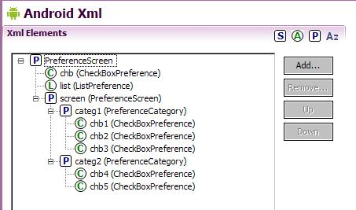
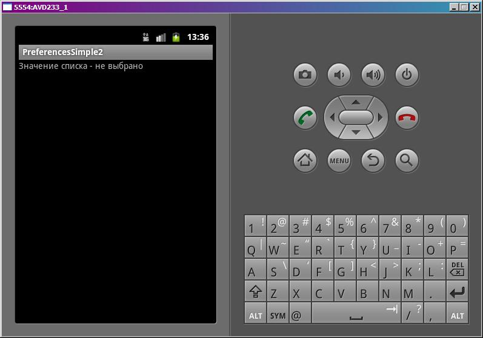
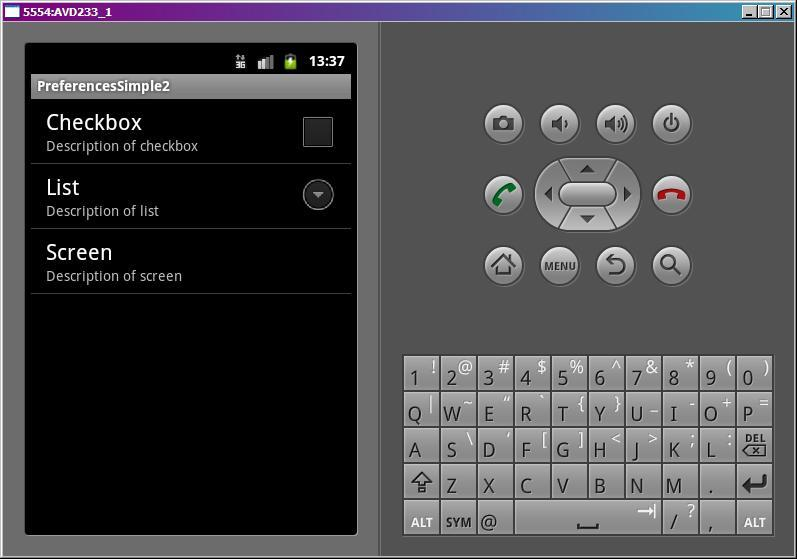
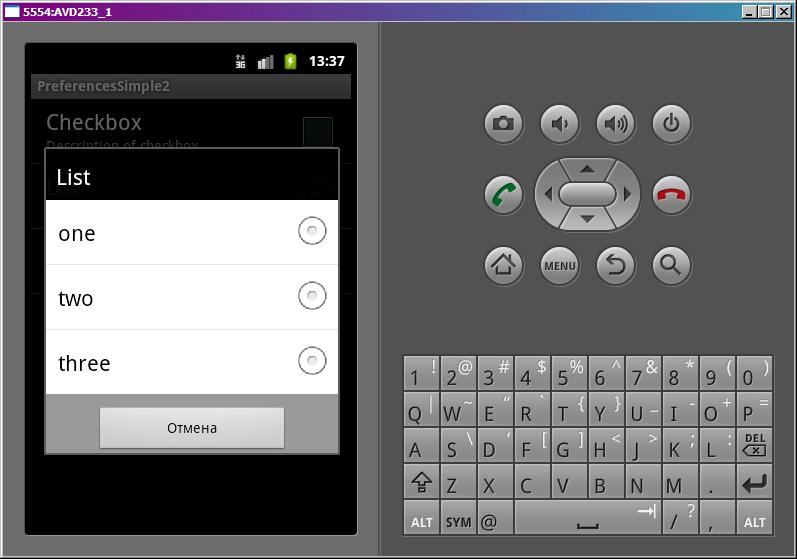
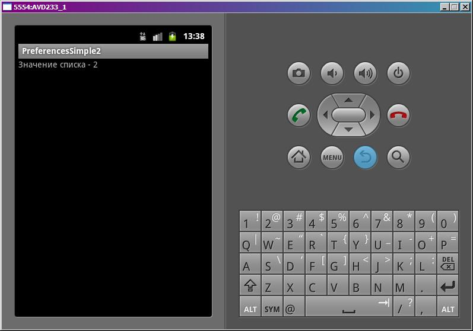

В этом уроке:
- используем в настройках список
- группируем настройки по экранам и категориям
На прошлом уроке мы узнали, как несложно создается экран настроек, и использовали там чекбокс и поле для ввода. Немного расширим наши знания и используем новые компоненты:
список (ListPreference) – позволяет выбрать значение из нескольких возможных
экран (PreferenceScreen) – с его помощью можно делать вложенные экраны с настройками
категория (PreferenceCategory) – группировка нескольких настроек
Создадим простое приложение. На первом экране будем читать и отображать значение из настройки-списка. Второй экран будет отображать все настройки.
Создадим проект:
Project name: P0721_PreferencesSimple2
Build Target: Android 4.0
Application name: PreferencesSimple2
Package name: ru.startandroid.develop.p0721preferencessimple2
Create Activity: MainActivity
Заполним strings.xml:
<?xml version="1.0" encoding="utf-8"?>
<resources>
<string name="app_name">PreferencesSimple2</string>
<string-array name="entries">
<item>one</item>
<item>two</item>
<item>three</item>
</string-array>
<string-array name="entry_values">
<item>1</item>
<item>2</item>
<item>3</item>
</string-array>
</resources>Мы создали два массива, чуть позже их используем для списка значений.
Рисуем основной экран main.xml:
<?xml version="1.0" encoding="utf-8"?>
<LinearLayout
xmlns:android="http://schemas.android.com/apk/res/android"
android:layout_width="fill_parent"
android:layout_height="fill_parent"
android:orientation="vertical">
<TextView
android:id="@+id/tvInfo"
android:layout_width="wrap_content"
android:layout_height="wrap_content"
android:text="">
</TextView>
</LinearLayout>Здесь только текстовое поле.
Создадим xml-файл с настройками res/xml/pref.xml:
<?xml version="1.0" encoding="utf-8"?>
<PreferenceScreen
xmlns:android="http://schemas.android.com/apk/res/android">
<CheckBoxPreference
android:key="chb"
android:summary="Description of checkbox"
android:title="Checkbox">
</CheckBoxPreference>
<ListPreference
android:entries="@array/entries"
android:entryValues="@array/entry_values"
android:key="list"
android:summary="Description of list"
android:title="List">
</ListPreference>
<PreferenceScreen
android:key="screen"
android:summary="Description of screen"
android:title="Screen">
<PreferenceCategory
android:key="categ1"
android:summary="Description of category 1"
android:title="Category 1">
<CheckBoxPreference
android:key="chb1"
android:summary="Description of checkbox 1"
android:title="CheckBox 1">
</CheckBoxPreference>
<CheckBoxPreference
android:key="chb2"
android:summary="Description of checkbox 2"
android:title="CheckBox 2">
</CheckBoxPreference>
<CheckBoxPreference
android:key="chb3"
android:summary="Description of checkbox 3"
android:title="CheckBox 3">
</CheckBoxPreference>
</PreferenceCategory>
<PreferenceCategory
android:key="categ2"
android:summary="Description of category 2"
android:title="Category 2">
<CheckBoxPreference
android:key="chb4"
android:summary="Description of checkbox 4"
android:title="CheckBox 4">
</CheckBoxPreference>
<CheckBoxPreference
android:key="chb5"
android:summary="Description of checkbox 5"
android:title="CheckBox 5">
</CheckBoxPreference>
</PreferenceCategory>
</PreferenceScreen>
</PreferenceScreen>Создавать его, конечно, можно не только через xml, но и конструктором. Вот такая получается картинка:

У нас в настройках будет чекбокс (chb), список (list) и вложенный экран (screen). Внутри screen две категории (categ 1 и categ2), а в них просто чекбоксы. Все просто и понятно.
Из интересного стоит отметить аттрибуты entries и entryValues у ListPreference. entries – это то, что отобразит список пользователю, а entryValues – это то, что сохранит система после выбора значения в списке. Мы используем тут два разных массива. В итоге список покажет значения one, two, three, а сохранит соответственно 1,2 или 3. Можно использовать один массив в обоих атрибутах, тогда отображаемые и сохраняемые значения будут равны.
Создаем Activity для настроек – PrefActivity.java:
package ru.startandroid.develop.p0721preferencessimple2;
import android.os.Bundle;
import android.preference.PreferenceActivity;
public class PrefActivity extends PreferenceActivity {
@Override
protected void onCreate(Bundle savedInstanceState) {
super.onCreate(savedInstanceState);
addPreferencesFromResource(R.xml.pref);
}
}И MainActivity.java:
package ru.startandroid.develop.p0721preferencessimple2;
import android.app.Activity;
import android.content.Intent;
import android.content.SharedPreferences;
import android.os.Bundle;
import android.preference.PreferenceManager;
import android.view.Menu;
import android.view.MenuItem;
import android.widget.TextView;
public class MainActivity extends Activity {
TextView tvInfo;
SharedPreferences sp;
/** Called when the activity is first created. */
public void onCreate(Bundle savedInstanceState) {
super.onCreate(savedInstanceState);
setContentView(R.layout.main);
tvInfo = (TextView) findViewById(R.id.tvInfo);
sp = PreferenceManager.getDefaultSharedPreferences(this);
}
protected void onResume() {
String listValue = sp.getString("list", "не выбрано");
tvInfo.setText("Значение списка - " + listValue);
super.onResume();
}
public boolean onCreateOptionsMenu(Menu menu) {
MenuItem mi = menu.add(0, 1, 0, "Preferences");
mi.setIntent(new Intent(this, PrefActivity.class));
return super.onCreateOptionsMenu(menu);
}
}В onCreate получаем доступ к настройкам.
В onResume выводим в tvInfo значение из настроек, которое записал туда список. Если значений нет, то пишем текст «не выбрано»
В onCreateOptionsMenu создаем пункт меню и вешаем на него Intent, который запустит нам экран настроек.
Остальные параметры читать не буду, это мы на прошлом уроке рассмотрели, там все просто.
Все сохраним и запустим.

Изначально настройки пусты, в списке ничего не было выбрано.
Переходим через меню на экран настроек.

Первый пункт – чекбокс, второй – список, третий – вложенный экран.
Нажмем на список:

Показаны значения из списка entries. Выбираем устраивающее нас значение, список закрывается и сохраняется соответствующее значение из списка entry_values. Можно вернуться на первый экран кнопкой Назад (Back) и убедиться в этом.

Я выбрал two, сохранилось 2.
Снова идем в экран настроек и жмем на вложенный экран Screen. Провалились внутрь.

Тут куча чекбоксов, которые сгруппированы по двум категориям.
Теперь мы умеем создавать экраны настроек с группировкой элементов по категориям и подэкранам. Это значительно удобнее для пользователя, чем куча разных настроек на одном экране.